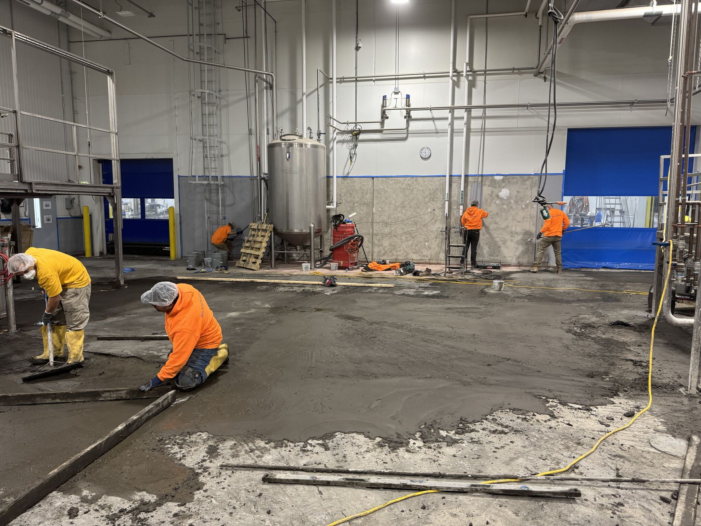
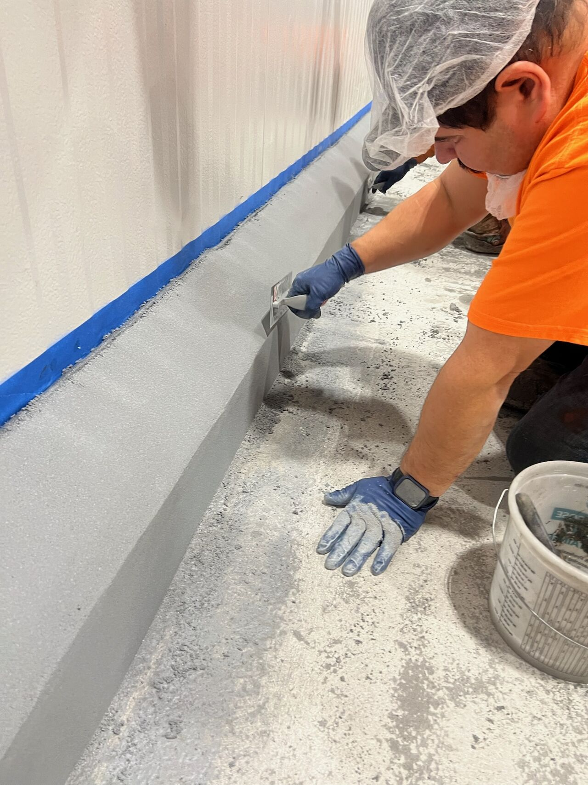
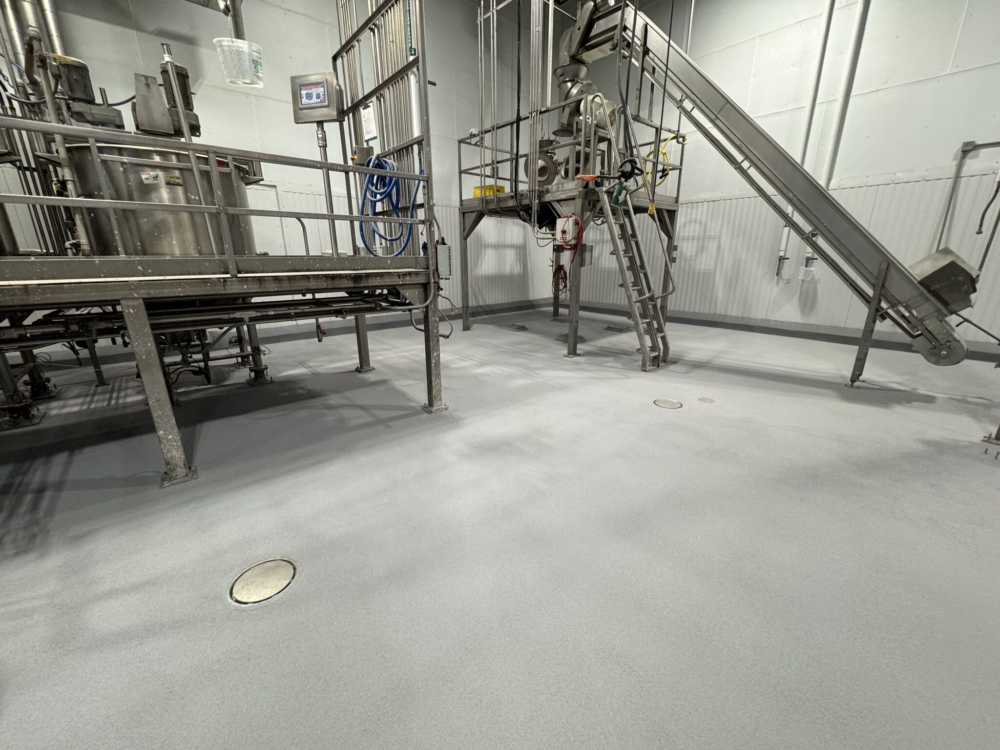

When people hear "flooring contractor," they think we show up, pour some material, and leave. This project was the opposite of that. A 3,500 square foot production room needed a complete transformation — and the facility gave us 7 days during a holiday shutdown to get it done.
Before & After

The before tells the story. A failed red coating, delaminating across the room, with drainage issues and deteriorating curbing. The after: a seamless gray floor with new spot drains, fresh VR curbing, and coated walls — ready for another decade of production.
Day 1-2: Demo & Drainage

We started by removing the failed flooring and scarifying the substrate. But this project went deeper — literally. We cut the concrete slab and installed 7 new spot drains with underground plumbing to address the facility's chronic drainage problems. No more standing water. No more guessing where the water goes.
Day 3-5: Floor Installation
With drainage sorted, our crew installed SaniCrete STX across the entire 3,500 SF area. Every square foot hand-troweled to the correct slope, pitched to the new drain locations. The crew worked in sections, moving efficiently to keep the project on schedule.
Day 5-6: Curbing & Walls
This is where "more than just floors" comes in. SaniCrete VR cant cove curbing was installed at every wall-to-floor transition, creating a seamless, sanitary connection that eliminates harborage points. Then we coated the walls up to the splash zone line — giving the facility a complete sanitary envelope from floor to wall.
Day 7: The Finished Room
On day 7, the room was done. 3,500 SF of seamless, USDA-compliant flooring with 7 new drains, VR curbing throughout, and coated walls. The facility was back in production on schedule. No extensions. No excuses. Just a completely transformed production room ready to perform.
Project Scope
- Area: 3,500 SF production room
- Timeline: 7-day holiday shutdown
- Flooring: SaniCrete STX — stainless steel reinforced cementitious urethane
- Curbing: SaniCrete VR — cant cove vertical curbing
- Drainage: 7 new spot drains with underground plumbing
- Walls: Prepared and coated to splash zone
- Concrete: SaniCrete PC polymer concrete for slope correction